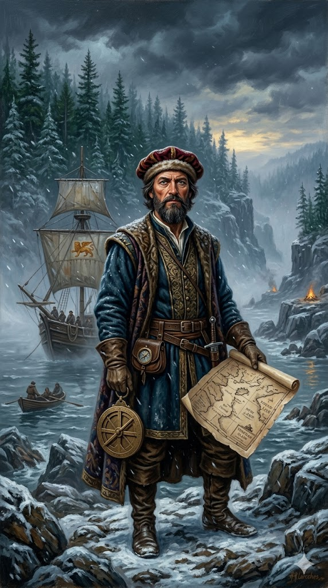

ג'ון קבוט

לחץ על התמונה להגדלה
מקור ומשמעות השם המלא (אטימולוגיה)
שם הלידה האיטלקי: ז'ואן/ג'ובאני קבוטו (Giovanni Caboto)
קבוט מעולם לא נולד כ"ג'ון קבוט". זהו האנגלוז של שמו האיטלקי המקורי.
שם פרטי (ג'ובאני): השם האיטלקי המקביל ל"יוחנן" העברי או "ג'ון" האנגלי, שפירושו "יהוה חנן" (האל חנן/ריחם).
שם משפחה (קבוטו - Caboto): מקור שם המשפחה אינו ודאי לחלוטין. התיאוריה הרווחת ביותר במחקר היא שמקור השם הוא במילה האיטלקית Cabotaggio (קבוטאז' - ניווט חופים), מה שמצביע על כך שמשפחתו עסקה במשך דורות בסחר ימי לאורך חופי הים התיכון.
השם האנגלי: ג'ון קבוט (John Cabot)
כאשר ג'ובאני קבוטו הגיע לאנגליה בסביבות שנת 1495 כדי לחפש מימון למסעותיו, הוא נאלץ להתאים את עצמו לסביבה החדשה (בדומה לקולומבוס ששינה את שמו ל"קולון" בספרד).
הפטרונים האנגלים שלו, ובמיוחד המלך הנרי השביעי, תרגמו וקראו לו "ג'ון קבוט" (John Cabot) – כתיב והגייה שהפכו אותו לנגיש ומקומי עבור הכתר האנגלי והסוחרים מבריסטול, וכך הוא נרשם בספרי ההיסטוריה המערבית.
ילדות, אזרחות ונציאנית ובריחה מחובות
ג'ובאני קבוטו נולד סביב שנת 1450, ככל הנראה בעיר גנואה או בנאפולי (יש מחלוקת היסטורית לגבי עיר הולדתו המדויקת), אך כשהיה ילד, משפחתו עברה לרפובליקה של ונציה – מעצמת המסחר הימי הגדולה של ימי הביניים. ב-1476 הוא קיבל אזרחות ונציאנית מלאה (תנאי הכרחי לסחר בינלאומי מטעם הרפובליקה).
קבוטו הצעיר הפך לסוחר תבלינים, ובדומה למרקו פולו לפניו, הוא נסע מזרחה לחופי הלבנט (ככל הנראה הגיע עד מכה) כדי לקנות סחורות יקרות ערך מסוחרים ערבים. המסעות הללו עוררו בו את השאלה: מאיפה מגיעים התבלינים במקור?
למרות ניסיונו בסחר, קבוטו נקלע לקשיים כלכליים כבדים. בשנת 1488, הוא ברח מונציה יחד עם משפחתו עקב חובות כבדים (ככל הנראה בעקבות השקעות כושלות בפיתוח קרקעות). הוא נדד לספרד ולפורטוגל, בניסיון למכור את כישורי הניווט שלו לשליטים המקומיים (בדיוק במקביל למאמציו של קולומבוס). לאחר שנדחה שם, חצה את התעלה והגיע לאנגליה. הוא בחר להשתקע בעיר הנמל בריסטול (Bristol), מתוך ידיעה שזו העיר האנגלית המתקדמת ביותר בתחום חקר האוקיינוס האטלנטי, שסוחריה כבר שלחו ספינות לחפש איים אבודים בים.
אידאולוגיה, מניעים ותפיסת עולם
האידאולוגיה והמניעים של קבוט התבססו על שילוב של קריאה נכונה של מפות, אסטרטגיה גיאוגרפית, וצורך כלכלי נואש (לאור חובותיו מהעבר).
המניע הגיאוגרפי ("המעבר הצפון-מערבי"): קבוט האמין (ובצדק, מבחינה מתמטית על כדור הארץ) שהדרך המהירה ביותר מאסיה לאירופה אינה חציית קו המשווה או שייט למרכז אמריקה (הנתיב של קולומבוס), אלא הפלגה בקווי רוחב צפוניים. מכיוון שכדור הארץ צר יותר בקטבים, הקפת כדור הארץ בצפון תהיה קצרה משמעותית. הוא רצה למצוא את מה שלימים ייקרא "המעבר הצפון-מערבי" לאסיה (Northwest Passage) כדי להגיע ישירות לאיי התבלינים.
המניע הכלכלי (פטרונות אנגלית): קבוט ידע שסוחרי העיר בריסטול כבר שנים שולחים ספינות מערבה כדי למצוא את אי הרפאים האגדי "היי-ברזיל" באוקיינוס האטלנטי כדי למצוא אזורי דיג חדשים. הוא מכר להם, ולמלך הנרי השביעי, תוכנית שאפתנית: אנגליה תממן אותו, והוא ימצא להם נתיב ישיר לשוקי אסיה, נתיב שיעקוף לחלוטין את המונופול הספרדי (דרום אמריקה) והפורטוגלי (אפריקה).
הדרך למלך הנרי השביעי וקבלת האישור למסע
המסע של קבוט ב-1497 היה תגובה ישירה ואגרסיבית של אנגליה לתגלית של קולומבוס מ-1492. אנגליה, מדינה קטנה יחסית בשולי אירופה בראשות המלך הנרי השביעי (מייסד שושלת טיודור), רצתה נואשות נתח מהעושר החדש ולא הייתה מוכנה להכיר במונופול הספרדי-פורטוגלי שהאפיפיור קבע ב"חוזה טורדסיאס".
מכתבי ההרשאה (Letters Patent): המלך הנרי השביעי היה מלך מחושב וחסכן. הוא התלהב מהרעיון של קבוט, אך לא רצה לממן אותו מכיסו או לפתוח במלחמה ישירה עם ספרד. ב-5 במרץ 1496, המלך העניק לקבוט "מכתבי הרשאה" המסמיכים אותו (ואת בניו) להפליג תחת דגל אנגליה לכל ים מזרחי, מערבי או צפוני, ולכבוש כל "עיר, טירה או אי של עובדי אלילים" שטרם התגלו לנוצרים. האישור כלל מונופול מסחרי לקבוט, אך התנאי היה קשוח: קבוט וסוחרי בריסטול נאלצו לשאת בכל עלויות וסיכוני המסע בעצמם, בעוד המלך יקבל חמישית מכל הרווחים נטו, מבלי לסכן אפילו מטבע אחד.
המסע והגילוי של אמריקה הצפונית (1497)
לאחר ניסיון נפל ראשון ב-1496 (שבו נאלץ לחזור עקב מזג אוויר וסכסוכים עם הצוות), יצא ג'ון קבוט למסעו השני וההיסטורי בחודש מאי 1497 מנמל בריסטול. למרבה הפלא, מסע כה משמעותי נעשה עם ספינה קטנה אחת בלבד: קרוולה בשם ה"מתיו" (Matthew), עם צוות של כ-18 מלחים אנגלים בלבד.
בניגוד לקולומבוס (שפגש ילידים ביום הראשון), קבוט לא פגש אף אדם מקומי, אך מצא עדויות לנוכחותם: שרידי מדורה, כלי אבן פשוטים ומחטים עשויות עצם.
החזרה לאנגליה (ה"אדמירל הגדול"): קבוט הפליג בחזרה (לאחר שזיהה את להקות דגי הבקלה העצומות של ה"גרנד בנקס", שיעשירו את סוחרי בריסטול לדורות). הוא חזר לאנגליה באוגוסט 1497 והתקבל כגיבור. המלך הנרי השביעי תגמל אותו, והוא כונה ברחובות "האדמירל הגדול". בדומה לקולומבוס, קבוט היה משוכנע שהגיע לקצה הצפון-מזרחי של אסיה.
הגילוי, חשיבותו ותעלומת ההיעלמות
התעלומה – מסע 1498 וההיעלמות: מעודד מההצלחה, המלך הנרי מימן לקבוט צי של חמש ספינות באביב 1498. המטרה: להפליג דרומה מהמקום שגילה ב-1497, עד שיפגוש את "ממלכת קתי" (סין של מרקו פולו) ואת איי התבלינים העשירים. ספינה אחת נאלצה לחזור לאירלנד עקב נזקי סערה. השאר המשיכו... וזהו. קבוט וצוותו נעלמו ללא עקבות, ולא נשמע מהם שוב לעולם. ייתכן שטבעו בסערה צפון אטלנטית, או שגוועו מקור ורעב בחופי קנדה.
בעוד שספרד ופורטוגל חילקו את הדרום והמרכז (ובזזו זהב וכסף), האנגלים, בהסתמך על תגליתו של קבוט, יחזרו מאוחר יותר לאמריקה הצפונית וייסדו את המושבות (כמו ג'יימסטאון ופלימות') שיהפכו בסופו של דבר לארצות הברית של אמריקה ולקנדה המודרנית. ללא קבוט וה"מתיו", סביר להניח שצפון אמריקה הייתה דוברת ספרדית או צרפתית.
מקורות וביבליוגרפיה (אימות מחקר)
- מכתבי ג'ון דיי וריימונדו דה סונצ'ינו: התיעוד על קבוט הוא דל מאוד (אין יומני מסע שלו). המקורות העיקריים הם מכתבים ששלחו סוחרים ודיפלומטים שחיו באנגליה לאיטליה וספרד בשנת 1497, בהם דיווחו בפירוט על חזרתו של קבוט ועל טענותיו שמצא אדמות במערב (John Day letter, Soncino dispatches).
- מחקר ארכיוני בריסטול (The Cabot Project): פרויקט מחקר מודרני של אוניברסיטת בריסטול, שחשף מסמכי מס ותעודות הלוואה המוכיחים שסוחרי העיר מימנו באופן משמעותי את קבוט, ואת הקשר האפשרי שלו למסעות קודמים לאטלנטי.
- מחקר אקדמי קלאסי: Quinn, David B. (1974). England and the Discovery of America, 1481-1620. (ספר יסוד על התפתחות המאמץ הימי האנגלי ביבשת, המבוסס על "זכות הראשונים" של ג'ון קבוט).